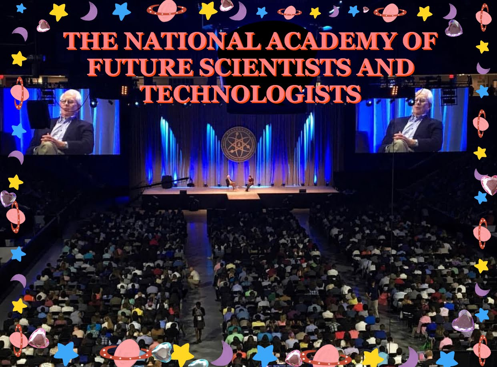
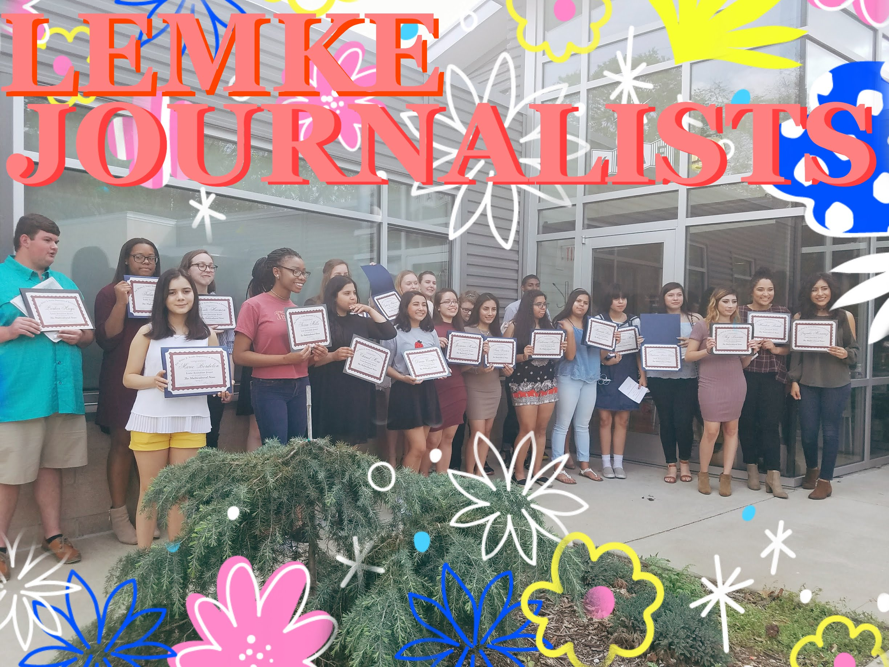

Passions

congress of future science and technology leaders
I loved stories before I knew what they meant. I remember lying on my mother’s chest, hearing the rise and fall of her voice as she wove tales of enchanted forests and wild Heffalumps. Yet I found, years later, the magic lay not in forest walls, but in the author. And so while I did not become a princess or a talking bear- I became a writer. Like this, I can be anything I wish.

Cross
Country
Being a three-year varsity athlete has helped grow as a student in unimaginable ways. I started my running career during my sophomore year, but I didn't expect to find a second family within a sport. The uplifting culture of the program encouraged me to keep reaching for new goals.

Published
Work
During my sophomore and junior year, I was part of the Lemke Journalism Project at the University of Arkansas. I was able to publish an article on the staggering trend of depression among second-generation immigrants with the help of mentors and psychologists who specialized in this topic. Bringing awareness to this issue to my community was one of the most important things I've done as student. This experience helped me realize my love for writing and my passion for social equality.